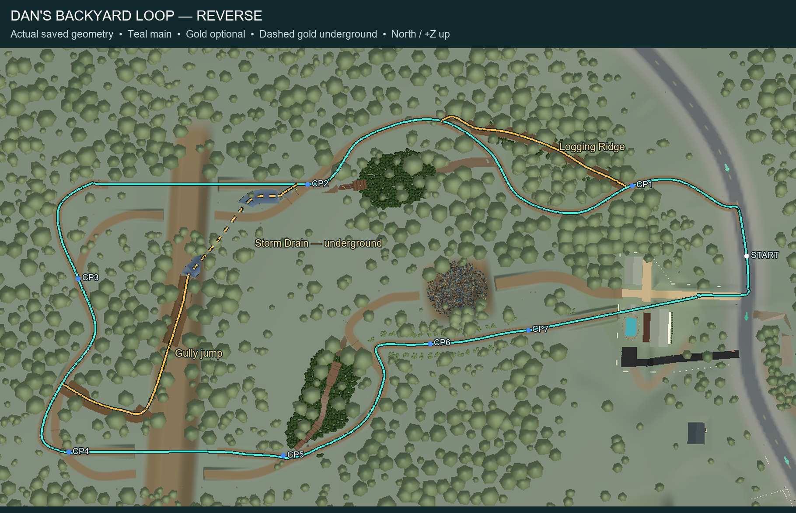

Teal is the accepted main route. Gold marks optional shortcuts; dashes mark the underground drain beneath the existing surface trail. Reverse has Logging Ridge and Storm Drain / Gully Jump. Forward retains its original Tree-Top Trail and Cabin Jump; the new drain grate and logging gate close during Forward races. Free roam opens them.

Original anchor coordinates and validation: request · technical evidence and limitations. Both new branches are player-only. Existing main routes remain unchanged.